Cátedra 23: Ciclo de Carnot y Teorema de Equipartición
Dos resultados centrales: se construye el ciclo de Carnot en el diagrama - (dos isotermas y dos adiabáticas) y se deriva por reducción al absurdo; luego se demuestra el teorema de equipartición por grado de libertad cuadrático y separable, aplicándolo al gas ideal en 3D y en 2D.
Temas que cubre
- Construcción explícita del ciclo de Carnot: isotermo a , adiabático, isotermo a , adiabático
- Demostración por contradicción de que ninguna máquina puede ser más eficiente que la de Carnot operando entre los mismos dos focos
- Eficiencia de Carnot: , y su independencia de los detalles del fluido de trabajo
- Teorema de equipartición: para cada grado de libertad separable y cuadrático en contacto con un termostato,
- Demostración vía cambio de variable e integración gaussiana
- Aplicación al gas ideal monoatómico en 3D: (recupera )
- Aplicación al gas ideal en 2D: , y comparación de entre 2D y 3D
- Extensión a sistemas más complejos: moléculas diatómicas con grados de libertad vibracionales (modelo masa-resorte)
Conceptos clave
Demostración por contradicción de Carnot
Se supone que existe una máquina real más eficiente que la de Carnot operando entre los mismos focos y . Se conecta esta máquina hipotética con una máquina de Carnot operando en reversa (como refrigerador), de forma que ambas produzcan o consuman el mismo trabajo. El resultado neto sería un flujo espontáneo de calor desde el foco frío al caliente sin trabajo externo — una violación directa del enunciado de Clausius. Por lo tanto, ninguna máquina puede superar la eficiencia de Carnot entre esos dos focos.
Universalidad de la eficiencia de Carnot
Como consecuencia de la demostración por contradicción, no depende del fluido de trabajo (gas ideal, vapor, lo que sea) — solo de las dos temperaturas de los focos. Esto es notable: Carnot llegó a esta conclusión sin saber nada de mecánica estadística, solo razonando sobre la imposibilidad de violar la segunda ley.
Teorema de equipartición
Si la energía de un sistema es separable en una suma de términos, cada uno dependiente de una sola coordenada o momento , y ese término es cuadrático (), entonces en equilibrio con un termostato a temperatura ese grado de libertad contribuye exactamente a la energía media, sin importar el valor de (masa, constante elástica, momento de inercia, etc.).
De la equipartición a la capacidad calórica
El teorema explica de forma inmediata por qué un gas ideal monoatómico en 3D tiene (tres grados de libertad cuadráticos de traslación: ) y por qué en 2D tendría (solo dos). Generaliza naturalmente a moléculas con grados de libertad rotacionales o vibracionales: cada uno cuadrático y separable suma más a la energía media, lo cual permite predecir capacidades caloríficas de sistemas mucho más complejos que el gas ideal simple.
Fórmulas fundamentales


Qué hay que entender
- La demostración por contradicción de Carnot es el arquetipo de cómo se demuestran límites termodinámicos: se asume que existe algo "mejor" que viola el límite propuesto, se combina con un proceso conocido (la máquina de Carnot en reversa), y se llega a una contradicción con un principio ya aceptado (Clausius). Este patrón de razonamiento reaparece constantemente en termodinámica.
- El teorema de equipartición requiere dos hipótesis simultáneas: separabilidad (la energía total es una suma de términos independientes) y cuadraticidad (cada término es proporcional al cuadrado de su coordenada). Si falta cualquiera de las dos, el resultado no se aplica directamente — por ejemplo, grados de libertad cuánticos "congelados" a baja temperatura no equiparten su energía clásicamente.
- La equipartición no dice nada sobre la energía potencial de interacción entre partículas (eso requeriría términos no separables). Por eso funciona perfectamente para el gas ideal (sin interacciones) pero hay que tener cuidado al aplicarla a gases reales o sólidos con fuerzas de enlace complejas.
- Cada grado de libertad cuadrático aporta sin importar su "tamaño" físico (masa grande o pequeña, constante elástica grande o chica) — toda la dependencia de esos parámetros queda absorbida en las fluctuaciones de la coordenada, no en la energía media. Esto es contraintuitivo la primera vez que se ve.
- La eficiencia de Carnot es un techo, no un objetivo alcanzable: cualquier máquina real tiene pérdidas (fricción, procesos no cuasi-estáticos, conducción térmica imperfecta) que la alejan de ese límite. Aun así, es la referencia universal contra la cual se compara toda máquina térmica real.